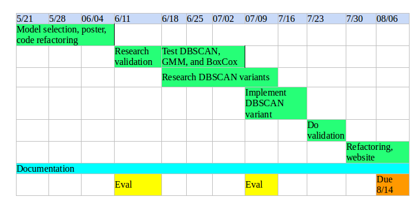

Using machine learning to improve SuperDARN data classification
This project aims to develop a new approach of classifying SuperDARN (Super Dual Auroral Radar Network) data using machine learning algorithms. In the past, this data has been classified using a formula based on elevation angle, which is not always reliably available, or using another formula based on doppler velocity and spectral width which is biased to miscategorize low-velocity ionospheric backscatter (IS) as ground scatter (GS). Recently, researchers successfully applied machine learning techniques to this data. These approaches improved on past methods, but they used a very limited set of features and relied on simple machine learning methods that do not easily capture non-linear relationships or subtle probability distributions. This project applies machine learning methods with a focus on using a larger number of well-selected features and using more nuanced algorithms. The resulting Github toolkit provides combinations of DBSCAN and GMM for classifying SuperDARN data, along with various plotting tools. This project will continue after the summer, and I plan to add details on validation and try new algorithms.
Schedule
Work completed:

Project summary
Work done
- Applied sklearn’s GMM to data, and experimented with transformations
- Decent results, with some odd high-variance clusters
- Slow
- Applied sklearn’s DBSCAN to data
- Can only break up clusters by time/space, not vel/wid
- Fast
- Applied DBSCAN + GMM to data
- Faster than only using GMM, and can break up clusters by vel/wid
- Likely the best algorithm in terms of speed/results
- Implemented Grid-based DBSCAN based on Kellner et al. 2012
- Original algorithm does not include time, so I added a ‘timefilter’ which considers points from adjacent scans as potential neighbors
- Slow. May be possible to speed up, but would require a lot of work.
- Implemented ST-DBSCAN based on Birant 2007
- Designed for spatio-temporal data which also needs to be clustered by other features (velocity/spectral width in our case)
- After extensive debugging and parameter tweaking, concluded this algorithm is not going to work for us
- Implemented different classification thresholds
- Ribiero, Blanchard code / Blanchard paper
- Implemented validation script based on elevation angle validation method from Blanchard 2009
- Researched statistical characteristics of other types of scatter
- meteor scatter [Chisham 2012], mixed scatter [power variance, where did I read this?], and scatter from different ionospheric hops [Chisham 2008a] - can add these categories later on
- Combined all useful algorithms into an object-oriented user-friendly toolkit
Future steps
- Test new params for the algorithms that are not performing well
- Figure out the best algorithm(s) and what circumstances they work/don’t work for
- Run validation tests on the best algorithms
- Also try various thresholds, various radars
- Improve database management
- Try an unsupervised neural network
- Try more transformations
Github Page
clustering_superdarn_data
Poster
Poster for SuperDARN Workshop 2018
GSoC Proposal
Using machine learning to improve SuperDARN data classification
GSoC Presentations
Presentation 1
Presentation 2
Detailed work log